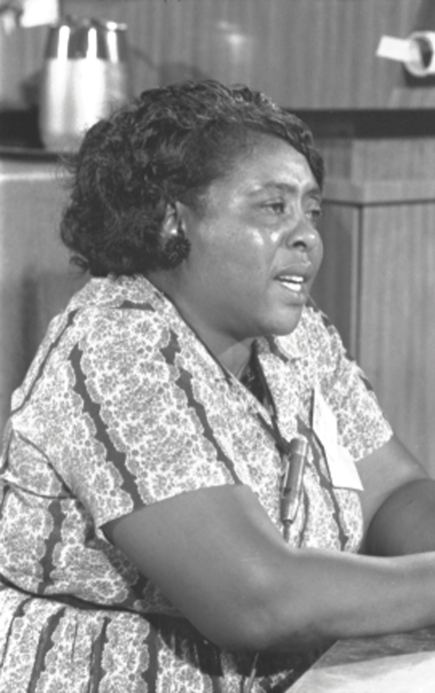
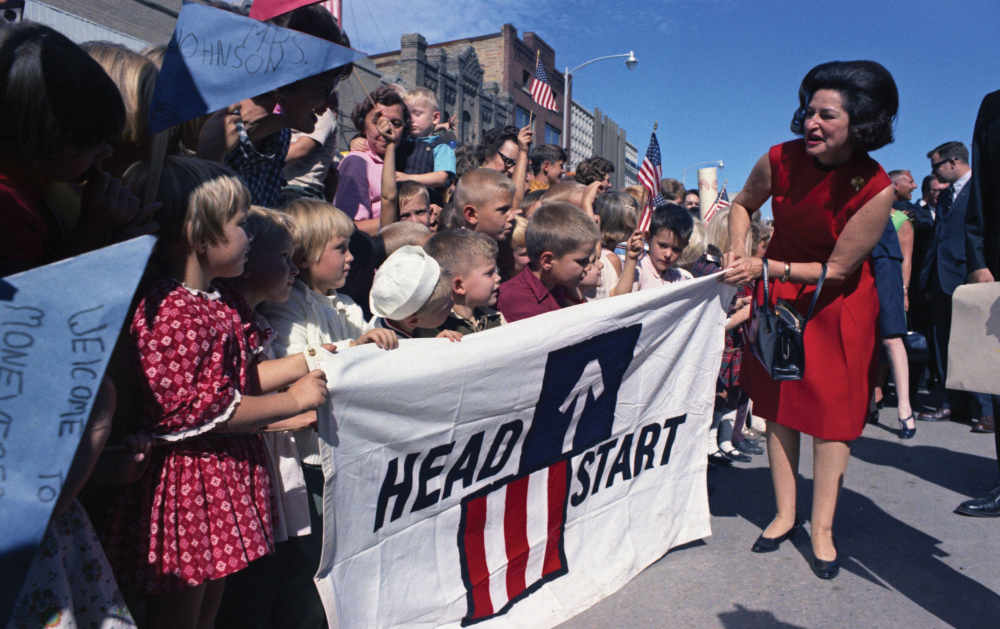
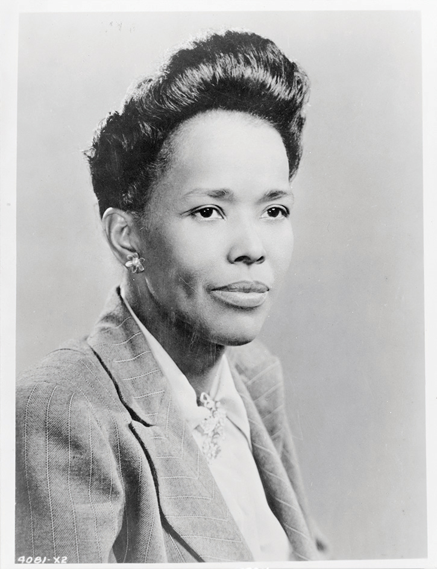
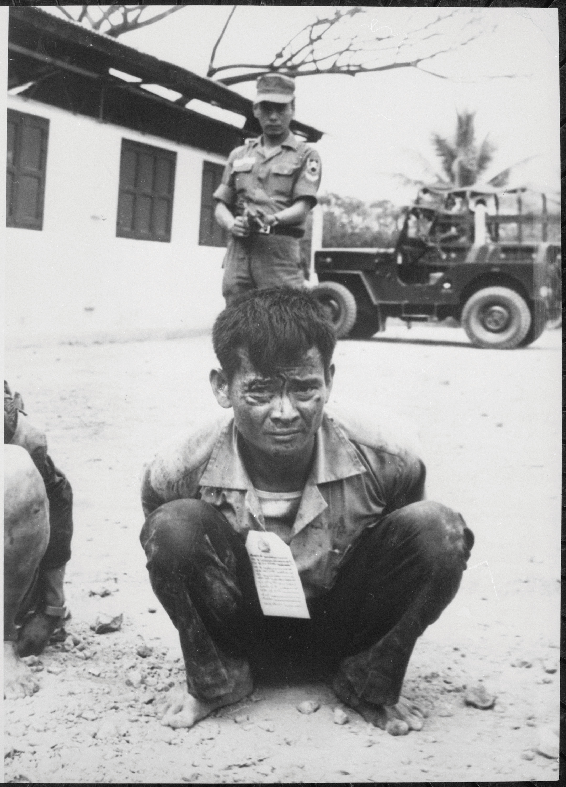
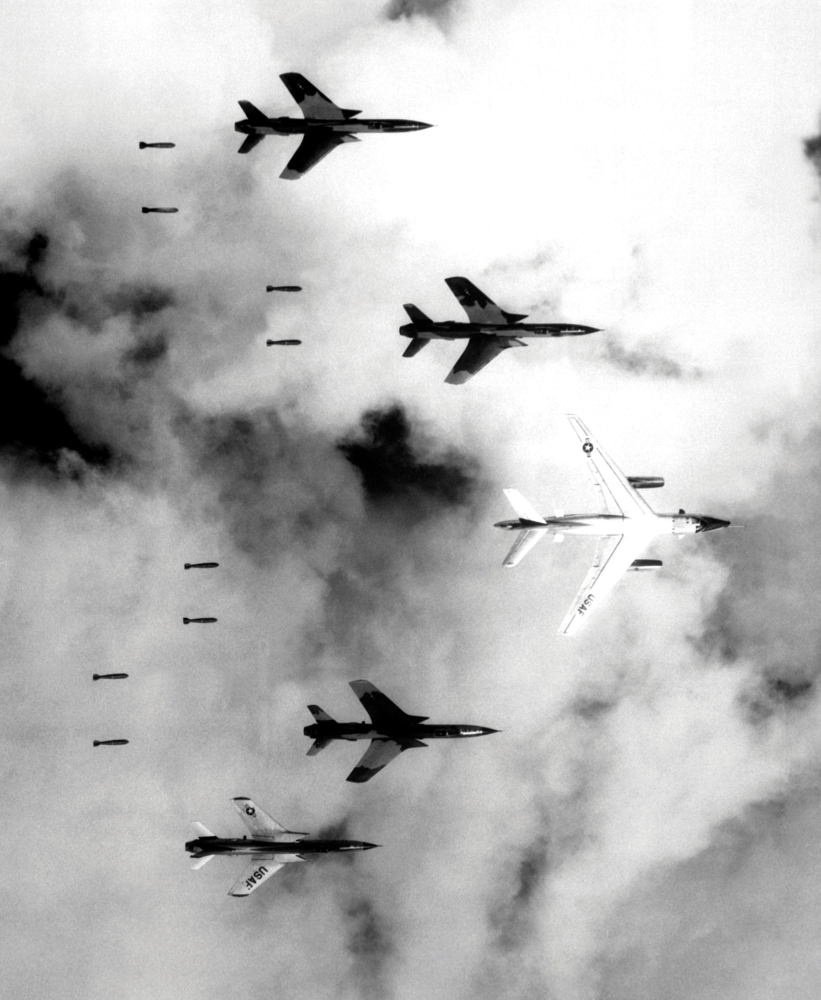
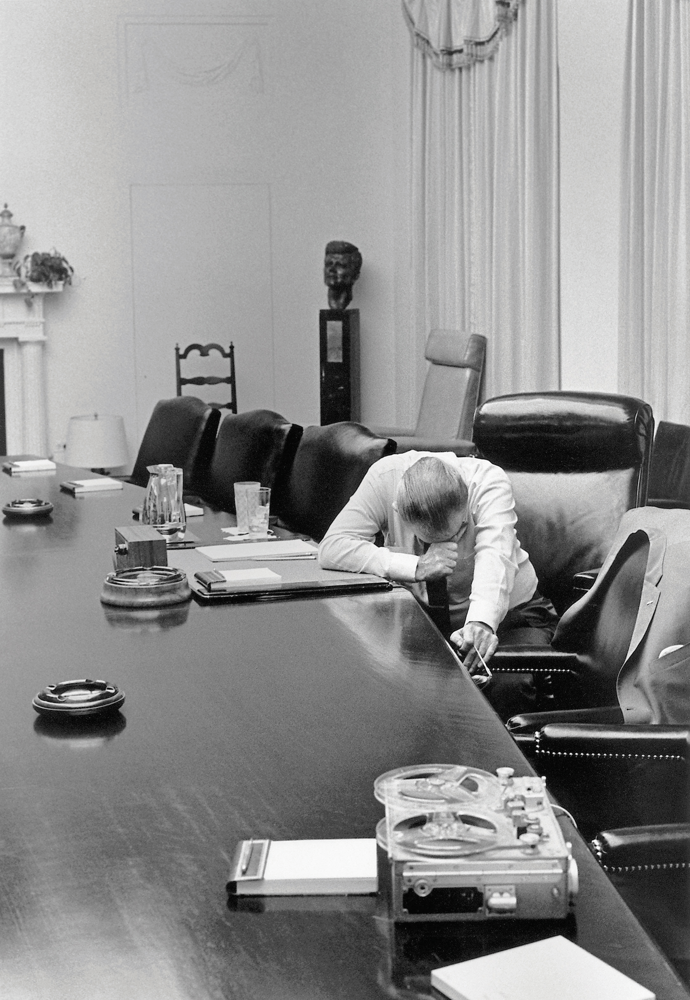

Popular culture soon reflected the movement from the city to the suburbs. Leading sitcom families in 1950s programs such as I Love Lucy and The Honeymooners were apartment dwellers, but by the 1960s, Americans gathered to watch the daily lives of suburban families in Leave it to Beaver and similar programs. While popular culture extolled the virtues of suburban life, a new generation of restless suburban youths continued to embrace counterculture modes of expression. Beneath the façade of conformity and contentedness, the youths of the early 1960s experimented with similar styles of music, literature, and drugs the beatniks had embraced in the previous decade.
Although few beatniks would have appreciated the tribute, 1960 was also the year that a British rock band called themselves The Beatles and began their meteoric rise. Offering a middle-class version of the rebellious posturing of the previous generation, The Beatles soon embodied the essence of suburban youth culture in the mid-1960s. The final years of the decade, however, featured a culture far more rebellious than the clean-cut teen idols from Liverpool. In 1969, half a million hipsters and fellow travelers converged upon a farm in upstate New York in 1969 to witness rock ‘n’ roll deliver its own proclamation of emancipation at a concert called Woodstock.
Lyndon Johnson rose to prominence in 1948 after election returns of questionable veracity declared the young man from the hill country of Texas that state’s senator by a mere eighty-seven contested votes. Now president, Johnson hoped to put the unfriendly nickname of “Landslide Lyndon” behind him forever by becoming the next Franklin Roosevelt. Although the economy appeared strong, sociologists had produced numerous studies detailing how a fifth of the population lived in squalor. Johnson’s supporters believed that the persistence of poverty in the wealthiest nation on the globe was more than a cruel paradox. In response, one of the first initiatives Johnson declared was a “war on poverty.” In August 1964, Congress passed Johnson’s Economic Opportunity Act. This law provided an average of $1 million for nearly 1,000 locally organized community action agencies around the nation. The president also created the Job Corps, which provided vocational training for young adults in the hopes of breaking the cycle of poverty.
Johnson labeled his sweeping domestic agenda as The Great SocietyThe slogan used by President Lyndon Johnson to promote a variety of proposed domestic legislation aimed at eradicating poverty and racial injustice. and proposed dozens of new laws and new agencies to deal with the problems of poverty and racial injustice. Supporters hailed the programs launched between 1965 and 1967 as a modern-day New Deal complete with a new alphabet soup of federal programs. The Volunteers in Service to America (VISTA) employed young and old Americans to conduct service projects in impoverished cities. Two new cabinet-level agencies, the Department of Transportation (DOT) and the Department of Housing and Urban Development (HUD), were added to the alphabet soup of federal acronyms. Johnson also supported the creation of the National Endowment for the Humanities and the National Endowment for the Arts, provided federal assistance for public broadcasting, and increased federal aid for colleges and students. The most controversial programs, however, were those that provided direct payments to the poor. Food stamps and other programs shifted the burden of poverty relief from cities and states to the federal government. Although some feared that Johnson’s welfare programs would encourage dependency and sap the ambitions of the poor, many greeted the program with optimism, believing that it would reduce fraud while providing a more complete security net against poverty.
Figure 11.7

This 1968 poster was made by the federal government to inform seniors about Medicare, a program that was part of the Social Security Act of 1965. Medicare is a federal health insurance plan that provides benefits for individuals who are eligible for Social Security.
This optimism was not enough to carry an ambitious plan to provide national health insurance, a plan originally proposed by FDR that continued to stall in Congress throughout the 1960s. Congress and President Johnson instead secured passage of MedicareA leading provision of the 1965 Social Security Act, Medicare provides health insurance for Americans age sixty-five and older who meet other eligibility requirements for Social Security benefits. in 1965, a federal system of health insurance for the elderly. Less than half of Americans above the age of sixty-five had any medical insurance, a situation that prevented many older Americans from obtaining medical care. Given the political power of senior citizens, the president quickly approved Congress’s plan to fund Medicare through an increase in Social Security taxes. The original plan failed to cover dental care, eyeglasses, certain prescriptions, and a host of other important services and procedures. However, seniors could choose either Plan A, which offset most hospital bills, or Plan B, which functioned much like an employer’s health plan with the recipient paying small premiums while the government shouldered the majority of the cost. Congress also approved MedicaidCreated in 1965 as part of Lyndon Johnson’s Great Society, Medicaid is a federal program administered by states and provides health insurance to the disabled and low-income Americans who are eligible for federal assistance., a program providing medical benefits for recipients of welfare and the disabled.
Although the federal government had passed numerous laws guaranteeing the right to vote regardless of race, African Americans throughout the South continued to be disenfranchised by a variety of methods. Black leaders throughout the South challenged their exclusion. Thousands had worked quietly to increase voter registration throughout the 1940s and 1950s, yet fewer than 2 percent of eligible black voters were registered and even fewer were able to vote. For example, black and white leaders at the Highlander Folk School in the Appalachian Mountains of Tennessee launched citizenship education schools throughout the South. Under the leadership of civil rights veteran Septima ClarkKnown to many as “Freedom’s Teacher,” Clark innovated the use of citizenship education schools that taught black Americans reading skills that prepared them to pass literacy tests required for voter registration. As director of the Highlander Folk School’s outreach program, she trained and recruited teachers of these schools throughout Appalachia and the South. and teachers like South Carolina’s Bernice Robinson (a beautician with no teaching experience), these schools taught literacy skills needed to pass voter registration exams. Robinson’s role as a beautician was important because she was self-employed and her clients were all black. Unlike existing public school teachers, Robinson could not be fired by a white school board member or harassed by a white suprervisor as had occurred so often in the past.
The citizenship school movement expanded rapidly in the early 1960s. Leaders from a variety of civil rights organizations, such as CORE, along with hundreds of Northern college students descended upon Mississippi in 1964 in what became known as the Mississippi Freedom SummerA sustained campaign by local African Americans and college students throughout the nation to protest continued disenfranchisement in Mississippi and throughout the South. Students taught reading skills to adults wishing to pass literacy tests while local activists formed their own political party to protest their exclusion from the white-controlled Democratic Party of Mississippi.. Many of the rural counties in the Delta had black majorities yet did not have a single registered black voter. Whites claimed that this was because black residents cared little for politics, but the reality was that any black person who registered to vote did so at great personal risk. For example, in 1963 Mississippi passed a law requiring the name of any new registrant to be published in the city paper. Allegedly meant to provide fellow citizens an opportunity to identify any nonresident, felon, or otherwise nonqualified voter, any black residents whose names were published soon found themselves fired from their jobs, evicted from their homes, and a handful even went missing.
Figure 11.8

Civil rights leaders Septima Clark (left) and Rosa Parks (right) enjoy a moment together at the Highlander Folk School in Monteagle, Tennessee.
Mississippi law also required any potential registrant to read and interpret a section of the state constitution. A provision officially meant to screen against illiterate voters who might accidentally vote for the wrong party, the test was often used to reject black voters. The exam was a subjective measure administered by white registrars who often failed black attorneys and black professors while approving the applications of illiterate whites. In George County, one white applicant interpreted the phrase “There shall be no imprisonment for debt” to mean “I thank that a Neorger should have two years in collage before voting because he don’t under stand.” This individual, and tens of thousands of other semiliterate whites, passed the exam. In other areas, however, the laws were used to restrict poor whites with little opportunity for education from voting. As a result, some poor whites joined the Freedom School movement and recognized their common cause with black Southerners.
The Freedom Summer challenged the nearly complete disenfranchisement of African Americans in the Deep South as thousands of black and white college students from throughout the nation converged upon Mississippi and other states to register black voters. Following the methods of Septima Clark’s citizenship schools, participants in the Freedom Summer organized classes that prepared potential voters for the registration exam. Robert Moses, a former school teacher who had been working in the state to register voters, helped to train the students and prepare them for the threats and violence they would face. Almost a thousand attended a week-long workshop at Miami University in Ohio where they learned skills such as how to protect their head and vital organs while being clubbed.
We knew, we knew that to get black people registered to vote…but we also knew that for many of those people who weren’t registered, the most important thing to them was often something different. Causing political change through voting was too intangible at first. They wanted to be able to order something out of a catalog, or read a letter from one of their children from out of town without having to take it to a neighbor or their white employer. That meant more to them than a registration certificate at that moment. They just couldn’t see that far down the road. So you dealt with them on that level. You had to. The rest followed. That’s why those schools worked.
—Bernice Robinson, Highlander Participant and Citizenship School Teacher in Coastal South Carolina
This training proved invaluable as the students dedicated themselves to nonviolent resistance. Hundreds were attacked and arrested, while dozens of churches that were used to hold classes were bombed. Three civil rights workers, James Chaney, Andrew Goodman, and Michael Schwerner, went missing while traveling through Philadelphia, Mississippi, that August. Hundreds of reporters and FBI investigators swarmed Mississippi to join in what many increasingly realized was a recovery operation to find the bodies of the three young men. “We all knew that this search with hundreds of searchers is because Andrew Goodman and my husband are white,” Rita Schwerner explained to a shocked nation. “If only Chaney was involved, nothing would have been done.” Investigators stumbled upon a half-dozen bodies of local black civil rights workers before finding the three students.
Figure 11.9
Fannie Lou Hamer was one of the sharecroppers who registered to vote during the Freedom Summer of 1964. She was fired, evicted, arrested, and beaten while in prison for her efforts to register other black voters. She is pictured here representing the Mississippi Freedom Democratic Party at the 1964 Democratic National Convention in Atlantic City, New Jersey.
The funeral of James Chaney reflected the anger of many African Americans as they increasingly recognized the second-class status they were given in their own freedom struggle as TV cameras and FBI investigators continued to only report on the actions of white students. But the civil rights movement did not yet fragment along racial lines as it would in the late 1960s. The presence of white students brought TV cameras, which publicized the plight of Southern blacks who recognized that the students were one of the few allies they had. Together, some progress was made even in places like Leflore County where no African Americans had voted in years. A county with a black majority, 1,500 black residents attempted to register, and with the national media present, local registrars could find no reason to disallow 300 of these applications.
Whites in Mississippi prohibited black voters from participating in the Democratic primaries, claiming that this was legal because their organization was private and therefore exempt from the Fifteenth Amendment. African Americans and a handful of white supporters formed the Mississippi Freedom Democratic Party (MFDP) in response. The MFDP challenged the legitimacy of the white-only Mississippi delegation to the 1964 Democratic National Convention. Wishing to keep white Southern voters from supporting a third-party segregationist candidate, the Democratic Party recognized the white-only Mississippi delegation and offered the MFDP only a token number of delegates. MFDP leader Fannie Lou Hamer soon became the public face of the voting rights movement in Mississippi when she explained why her organization could not accept this token offer. Hamer described her own experience of being beaten while in prison for attempting to register black voters in Mississippi, exposing the hypocrisy of Democratic leaders who spoke of the political sacrifices they had made by offering token support to the MFDP. The following year, Democrats hoped to avoid future controversy and approved the 1965 Voting Rights ActA law intended to enforce the provisions and intent of the Fifteenth Amendment, which barred race as a reason for denying any US citizen the right to vote. The law gave the federal government the power to oversee elections and intervene if it believed that the rights of voters were being infringed.. This law allowed for federal supervision of voter registration and elections when racial discrimination was suspected. “Mississippi has been called ‘The Closed Society,’” explained organizer Robert Moses. “We think the key is in the vote.”
President Johnson praised education as the “key which can unlock the door to the Great Society.” The president supported the Higher Education Act, which expanded work-study programs and provided loans for tuition and living expenses. These loans would be serviced through private banks but would feature low interest rates because the federal government would guarantee payment. Now all young adults who did not have a wealthy family member to cosign their college loans could turn to their Uncle Sam.
More controversial was Johnson’s desire to vastly expand federal aid to K-12 education. Kennedy had attempted a similar measure, but his opposition to funding parochial schools (a provision the Catholic Kennedy supported but feared would prove politically suicidal) derailed the measure. Johnson’s bill worked around the controversy by providing subsidies for families with children in private schools (rather than the schools themselves). The primary feature of the Elementary and Secondary Education Act of 1965, however, was the allocation of $1 billion in federal aid for public schools. By bridging the political divide between the supporters of private and public schools, Johnson’s bill was the first legislation providing significant funding to K-12 education. Previous laws tied this funding to school integration, which probably did more than Brown v. Board to encourage integration in hundreds of school districts. Equally important, the 1965 law began a historic shift in the way public schools were financed. Advocates of federal aid believed that this revenue would compensate for the inequities of locally funded schools. However, poor districts still spent far less per pupil, and federal aid increasingly became an excuse to cut school funding in many districts.
Medicare provided benefits for nearly 20 million Americans but did not cover a host of expenses, such as prescription drugs, leading many to criticize the program for its “gaps” in coverage. In addition, the program quickly became one of the government’s leading expenses and required continual increases in taxes. Part of the reason was that the plan was designed to placate lobbyists representing the American Medical Association (AMA), which had derailed two decades of government health insurance proposals that contained cost controls and limits on procedures as “socialized medicine.”
Desirous to pass the law without the opposition of the AMA, the plan did little to regulate the costs of medical care or the procedures that might be covered. As a result, medical providers were now paid primarily by insurance companies and the federal government, and they responded by raising their prices an estimated 14 percent per year. Unlike the free market where consumers pay directly and therefore shop for the best prices, recipients of Medicare and Medicaid cared little for the cost of service. Medicaid recipients had previously gone without medical service due to their inability to pay, but once the federal government assumed payment for emergency care, an increasing number of poor Americans went directly to emergency rooms for medical care. In addition, a handful of doctors set up clinics in poor neighborhoods, and these clinics routinely performed unnecessary and expensive tests on Medicaid clients as a way of defrauding the government.
Figure 11.10
Claudia Taylor Johnson, better known as “Lady Bird” Johnson, celebrates a Minnesota Head Start program with some of its students. The First Lady was active on behalf of a number of causes during her husband’s administration and was also a successful business leader both before and after her tenure in the White House.
The nation’s increasing standard of living, expanded government programs for the poor, and even the rhetoric of civil rights activism were helping to create a culture of entitlement among many Americans. The notion that a certain minimum standard of living was a “right” that all Americans were entitled to increasingly gained currency throughout the 1960s. Most recipients of government aid in the United States ate meat every day and lived in homes with electricity, running water, and central heating. Each of these was a rare luxury in most nations, while the latter three were relatively new inventions. However, federal programs such as Aid to Families with Dependent Children operated through matching grants to states and therefore failed to provide any benefits to some of the poorest families in states that could not adequately subsidize the program. Still, conservative reservations about providing direct aid to the poor, combined with reported abuses of governmental assistance, led to relative declines in public support for Johnson’s war on poverty.
Figure 11.11
As a daughter of the Jim Crow South, civil rights leader Ella Baker devoted most of her efforts to challenging racism. However, Baker also believed that racism was a symptom of a larger social illness that kept people and communities from recognizing their common interests and working together to solve common problems.
One of the first casualties of the Great Society was the gradual defunding of community action agencies. Inspired by sociologists who identified a “culture of poverty” as the greatest enemy in Johnson’s war, federal money was supposed to be directed to these local and autonomous community groups who would then decide how the money would be best spent. The law required that the poor themselves were supposed to lead these groups as much as possible, a provision Johnson hoped would help the poor to learn to help themselves. The provision was both simple and radical. If larger and larger numbers of poor people became engaged in their own welfare, the cycle of poverty might slowly grind to a halt.
Believing that ordinary people who mobilized in an organized, democratic, and meaningful manner might reinvent themselves and their communities, reformers and activists joined with the working poor to create a host of programs such as Head Start, which provided aid for education in poor communities. Many liberals hoped the Office of Economic Opportunity (OEO) would radically challenge the concept of democracy. As civil rights icon and community organizer Ella Baker explained, “In order for us as poor and oppressed people to become a part of a society that is meaningful, the system under which we now exist has to be radically changed.” For Baker, this meant that the people must “learn to think in radical terms…getting down to and understanding the root cause” of their problems and “facing a system that does not lend itself to your needs and devising means by which you change that system.”
However, those that hoped the OEO might breathe new life into poor neighborhoods and new meaning into the concept of democracy were disappointed by the limited funding that represented less than 1 percent of the federal budget and less than $230 for each of the 35 million poor Americans each year. At the same time, the decentralized nature of the plan also provided ample opportunity for mistakes or even fraud. All the rhetoric about these groups providing a “hand up instead of a handout” for the poor was quickly forgotten when a handful of those hands misappropriated funds. In addition, while the president portrayed himself as a modern-day FDR, Johnson increasingly focused his efforts on events overseas. Just as Truman’s social programs were derailed by a war in Asia, efforts to contain the spread of Communism largely determined the outcome of Johnson’s presidency after 1965.
Although the United States had been actively involved in Vietnam for over two decades, Southeastern Asia was still a peripheral interest to US officials until the mid-1960s when Communist forces under Ho Chi Minh appeared ready to take over the southern portion of the country. The growing power of Communist North Vietnam and the declining position of the US-backed government of South Vietnam led many officials to assume that the North’s success was part of a Soviet and/or Chinese plot to spread Communism throughout the globe. In reality, China and the Soviet Union were antagonistic to one another and did not coordinate any substantial action regarding the situation in Vietnam. Ho Chi Minh did receive Soviet aid, but recent scholars have determined that the Soviet strategy was not based on the aggressive and expansionistic worldview US leaders feared. In fact, it appears the Soviets and Americans viewed events in Vietnam in very similar terms.
Figure 11.12
A South Vietnamese soldier guards a young boy who was believed to have participated in an attack against US and South Vietnamese forces. The Vietcong recruited women, children, and the elderly in their guerilla war against the South and the United States.
Americans shared deep reservations about supporting the non-Communist dictatorship of South Vietnam. The Soviets were equally hesitant to support the authoritarian regime led by Ho Chi Minh. Soviet leaders did not believe the North Vietnamese army or the Vietcong were true followers of Marxism and recoiled at the many human rights violations these troops committed. However, the Soviet Union had its own domino theory about what might happen if Communist governments such as Hanoi fell due to Western intervention. If they failed to support Ho Chi Minh as he battled the forces of Capitalism and imperialism, the Soviets asked, what message would this send to Communist leaders around the globe? The United States shared a similar global perspective in backing the South Vietnamese. So, fearing international consequences if they failed to act, both the United States and the Soviet Union backed regimes of which they were not enthusiastic supporters and hoped for the best. As a result, Vietnam turned from a civil war to determine the leadership of a newly independent country to a proxy war between the two superpowers neither wanted to fight.
The United States became increasingly reluctant to support the South Vietnamese after the Catholic Ngo Dinh Diem approved a series of raids against Buddhist monasteries in 1963. Diem believed that the Buddhist majority was hostile to his regime, and instead of seeking mediation, he used US military aid to his army to conduct mass arrests of Buddhist leaders. In response, the Kennedy administration conveyed the message to a handful of South Vietnamese military leaders known to share US reservations about Diem’s leadership that the United States would support a coup if it meant removing Diem. Kennedy was personally hurt to find out that the result of the coup, which occurred two months after his message was conveyed, resulted in Diem’s assassination.
The leadership of South Vietnam was transferred to the South Vietnamese military, which was equally corrupt and authoritarian. President Johnson continued to provide this government with military aid, largely due to a fear that failure to do so would lead to a North Vietnamese victory and vindicate Republican allegations that he was soft on Communism. The South used this aid to conduct raids on the North. As a result, the North viewed all South Vietnamese and US warships in the adjacent Gulf of Tonkin as enemies. When a handful of small North Vietnamese boats fired at but did not harm a US destroyer in August 1964, President Johnson requested congressional authority to respond militarily.
The actual attack on the US ship was miniscule and a second alleged attack may not have even occurred. However, Congress responded by almost unanimously approving the president’s request in what came to be known as the Gulf of Tonkin ResolutionA nearly unanimous congressional approval of Lyndon Johnson’s request to use his authority as commander in chief to escalate military operations in Vietnam. The Resolution was passed after limited debate following a series of reported attacks on US warships in the Gulf of Tonkin.. The American public was understandably outraged to hear of the “unprovoked” attacks on US servicemen in the Gulf and supported Congress’s decision to grant Johnson’s sweeping power “to repel (future) attacks…and prevent further aggression.”
The public was never made aware that the destroyer in question was involved in an operation against the North Vietnamese. They were also not informed that South Vietnamese forces were launching nightly raids against the North using vessels given to them by the United States. Nor did the public believe that the resolution would later become the basis by which two US presidents would wage a war without a specific congressional declaration. The public did generally approve, however, of President Johnson’s immediate actions following congressional approval of the Gulf of Tonkin Resolution. To show US resolve against the perceived threat of Communism in North Vietnam, the president approved aerial attacks against military targets and sent tens of thousands of troops to bases throughout the region.
The United States sent more than 150,000 troops by the end of 1965. Each of these soldiers soon shared complaints about the ineffectiveness of the South Vietnamese army they were sent to support. Consisting of mostly conscripted South Vietnamese troops who had little faith in their own government, the leading priority of these young men was to stay alive rather than confront communists. Even when given superior weapons and support, the South Vietnamese soldiers often dropped their weapons and ran when they confronted the Vietcong. US soldiers soon dubbed these South Vietnamese misadventures “search and evade” missions rather than the official moniker which was “search and destroy.”
The Vietcong, in contrast, made up for its lack of equipment with a much stronger resolve to fight. US soldiers soon developed a grudging respect for these “VCs” as they were called. Many of the VC leaders were veterans of the long fight for independence from France and Japan. This core group of an estimated 60,000 guerilla warriors was augmented by 100,000 to 200,000 more civilians who exchanged plowshares for rifles throughout the year and then returned to peasant farming. Known by dozens of inhuman epithets, the Vietcong soon became known by a more human moniker as soldiers using the military alphabet referred to “VC” as “Victor Charlie” and eventually just “Charlie.”
The Vietcong and North Vietnamese were generally very familiar with the local terrain, placed thousands of deadly traps throughout the jungle, and utilized hit-and-run guerilla warfare against the US and South Vietnamese troops. They also disguised themselves as local villagers and forced many civilians to join them. Even women and children regularly carried weapons and used them against US and South Vietnamese forces. As a result it was nearly impossible to distinguish between civilians and soldiers in a war where villages became part of the battlefield.
General William WestmorelandUS Army general and commander of US forces in Vietnam between 1964 and 1968. Westmoreland’s strategy was based on his belief that the United States must escalate the war and overwhelm the North Vietnamese and Vietcong through superior firepower and resolve. He believed that the United States was wearing down the enemy and regularly provided exaggerated numbers of enemy killed in battle and underestimated the continued strength of the VC in ways that led many to question his leadership following the Tet Offensive. recognized all of these challenges, yet believed that more troops, more bombing raids, and more supplies would eventually wear down the enemy. After all, he believed, the United States enjoyed superior technology and possessed immense resources the North Vietnamese army (NVA) could not compete against. Even Ho Chi Minh agreed with this assessment of superior US material resources, but believed that the ideological commitment of his supporters would mitigate the difference. “You can kill ten of our men for every one we kill of yours,” Ho allegedly communicated to a French adversary in the 1940s. “But even at those odds, you will lose and we will win.”
While it should be mentioned that authenticity of the previous quote cannot be verified, the statement accurately reflects the way both US and Communist forces fought throughout the Vietnam War. General Westmoreland and other US officials focused on exterminating the NVA and VC rather than the more conventional military strategy of taking and holding ground. The NVA and VC, on the other hand, recognized that they would seldom inflict more casualties on the enemy given their disadvantages. They often demonstrated a fatalistic resolve to continue the war, despite heavy losses. Part of this devotion was ideological and reflected an individual’s conviction that Ho Chi Minh was leading his nation in a fight for independence from outside influence. At the same time, the VC and NVA used extreme coercion against those who opposed them, including their own recruits. VC and NVA who refused orders, or even civilian villagers who cooperated with the United States and South Vietnamese were often executed.
Hoping to demonstrate US resolve and firepower, as well as convince the South Vietnamese that they could defeat the North with US assistance, Johnson ordered a sustained bombing campaign in March 1965. Known as Operation Rolling ThunderA sustained bombing campaign that dropped more ordnance on targets throughout Vietnam between 1965 and 1968 than was delivered by all belligerents through the entire course of World War II., the bombing lasted until the fall of 1968. The damage to the North Vietnamese countryside was supposed to be limited to military targets, yet it was difficult to prevent civilian casualties in a nation where the line between civilians and military was impossible to determine from the air. Most historians charge the US military with willful indifference regarding the issue of civilian casualties during Operation Rolling Thunder.
Figure 11.13
A massive B-66 bomber accompanies four F-105s in a July 1966 mission during Operation Rolling Thunder. The F-105 was a fighter jet that could also drop 14,000 pounds of explosives.
In many respects, US planners made little effort to draw this distinction between civilians and combatants in most of the wars of the twentieth century. Much like the bombing campaigns of the later years of World War II, cities were targeted in a failed effort to crush the will of the North Vietnamese military leaders. Large areas of South Vietnam were also targeted. The US military declared certain areas believed to harbor NVA and VC troops “free fire zones” and used every nonatomic weapon in its arsenal to destroy every living thing in those zones. By the end of the war, 14 billion pounds of explosives had been dropped on Vietnam, roughly 500 pounds of explosives per man, woman, and child. These bombing raids failed in their objective to end North Vietnam’s ability to launch attacks on the South. They also failed to win support for the already unpopular South Vietnamese government among the people of Vietnam.
One of the leading reasons for America’s aerial strategy was that President Johnson recognized that a land-based offensive against North Vietnam would result in tremendous US casualties. And so the bombing campaigns continued through 1968, and then escalated under President Nixon. Military leaders promised that each new bombing campaign would either convince Hanoi to end its attacks or limit the power of the North. The bombing of cities and villages had historically proven to be an ineffective method of waging war. The only exception to this rule—the use of nuclear weapons—was discussed and rejected by military and civilian leaders throughout the United States. Instead, US commanders hoped that their strategy of combined arms—aerial bombardment and traditional ground forces—would eventually wear down the VC and NVA.
By 1967, Westmoreland commanded half a million troops in Vietnam. The VC and NVA, however, used Fabian tactics of avoiding pitched battles they knew they could not win in a similar effort to wear down their enemy. US commanders responded by waging war on the countryside that was supplying the enemy. The military used napalm, an extremely flammable agent, as well as the chemical defoliant Agent Orange to destroy the 10 million square miles of jungle that provided cover for the VC. The devastation on the ecosystem was tremendous, and agents were also used directly against the fields that both the civilian population and the VC depended upon for food. This destroyed the local economy, a calculated measure that the United States hoped would eliminate the possibility of VC and NVA troops raiding local food supplies.
Figure 11.14
President Johnson reacts emotionally to a tape sent to him by his son-in-law, a captain and a commander of a company of US Marines in Vietnam.
Recognizing that napalm and Agent Orange would also eliminate the ability of peasants to grow crops and likely drive many to support Communist North Vietnam, the United States also provided humanitarian aid meant to guarantee the loyalty of villagers. US commanders even considered the possibility of destroying dams and flooding the entire countryside as a means of holding the entire nation hostage and forcing North Vietnamese leaders to end the war on US terms. However, these more bellicose military leaders were overruled, and the United States continued its “limited” campaigns against the North and the free fire zones of the South. The war on the countryside proved ineffective, and humanitarian aid was just as easily smuggled to or captured by the VC as the food that had previously been grown by the peasant majority. In addition, the 3 million Vietnamese in refugee camps recognized the cause of their dependency on US aid and were even more likely to sympathize with the North.
By 1967, the nation was beginning to divide on the question of Vietnam. Antiwar protests attracted only a few hundred supporters throughout 1965, but by 1967, those who opposed the war had created a movement and tens of thousands were attending protests. Most Americans still supported the war effort and viewed these protests as unpatriotic and disrespectful to the US soldiers. Many of these individuals believed that the only logical and honorable solution was to increase troop strength and intensify bombing until North Vietnam was forced to surrender.
Some protesters responded by modifying their message to emphasize their desire to support the troops by bringing them home. Others took the offensive by challenging those who favored escalation to explain how more bombing might lead to surrender and asking exactly to whom they thought the North might surrender. After all, they reminded their opponents, the United States had still not declared war and the South Vietnamese government was viewed by most Vietnamese as illegitimate. Martin Luther King increasingly came to oppose the war as the only consistent position for an advocate of nonviolence. He also feared the war diverted resources that might have been used to aggressively fund antipoverty programs. By the final year of his life, King declared that The Great Society was “shot down on the battlefields of Vietnam.”